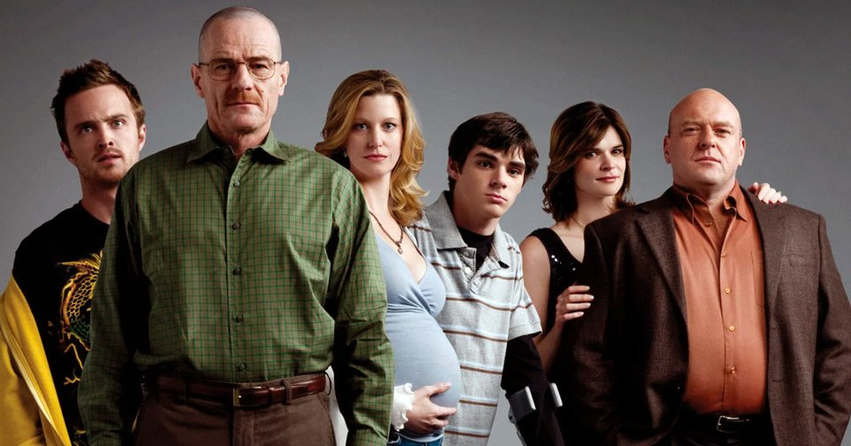

ACTORES Y ACTRICES
Uno de los pilares donde la serie es su elenco, que logra hacer sentir
cada escena como si estuvieras
espiando la vida de alguien real.
- Bryan Cranston como Walter White:
Pasa de ser un tipo apagado a una figura imponente. Su actuación es literalmente una metamorfosis. - Aaron Paul como Jesse Pinkman:
El corazón emocional de la serie. Caótico, vulnerable y profundamente humano. - Anna Gunn como Skyler White:
Un personaje complejo que refleja el impacto real de las decisiones de Walter en su familia. - Dean Norris como Hank Schrader:
Representa la ley, pero también el orgullo, la intuición y la obsesión.

Cada actor apunta a una capa distinta, logrando que ningun personaje sea plano. Todos tienen
matices, contradicciones y momentos donde te hacen dudar de todo.